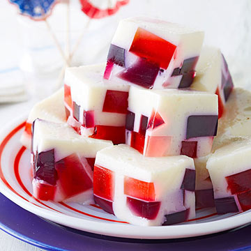
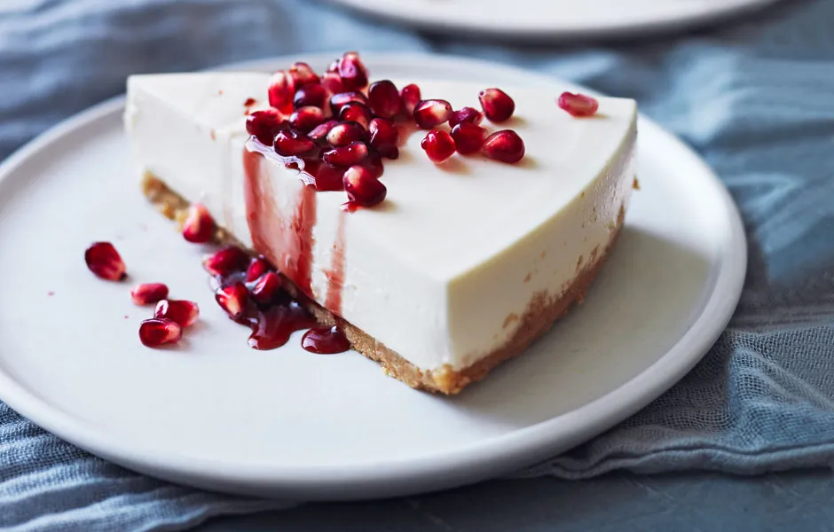

Yogurt Parfait

Ingredients
- 3 cups vanilla nonfat yogurt
- 1 cup fresh or defrosted frozen strawberries in juice
- 1-pint fresh blackberries, raspberries or blueberries
- 1 cup good quality granola
How to make
- Layer 1/3 cup vanilla yogurt into the bottom each of 4 tall glasses.
- Combine defrosted strawberries and juice with fresh berries.
- Alternate layers of fruit and granola with yogurt until glasses are filled to the top.
- Serve parfaits immediately to keep granola crunchy.
Yogurt Jelly

Ingredients
- 1(1/3 ounce) packet sugar-free jelly (any flavor)
- 2cups nonfat yogurt (This should be any flavor that compliments the jelly.)
- 2cups water
How to make
- Put yogurt into a serving dish that will hold about one quart.
- Make jelly as directed on box.
- Immediately pour jelly into dish.
- Stir well, until completely mixed.
- Let set in refrigerator, at least 4 hours.
- This can also be made in 4 individual serving cups. Put 1/2 cup yogurt into each cup. Divide jello evenly between each serving cup. Mix each cup individually.
- If you don't have a large container of yogurt, you can also use 2 (8oz) containers, or even 3 to 4 (6oz) containers.
Greek Yogurt Cheesecake

Ingredients
Graham Cracker Crust
- 2 sleeves graham crackers 18
- ½ cup coconut oil melted
- ¼ cup packed light brown sugar
Cheesecake Filling
- 2 8 ounce packages cream cheese
- 1 ¼ cup plain Greek yogurt
- ¼ cup honey
- 2 tablespoons lemon juice
- 1 teaspoon vanilla extract
- Pinch of salt
How to make
Graham Cracker Crust
- Add the ingredients for the crust into the bowl of a large food processor and blend until fine and crumbly.
- Spoon the crust evenly between 8 small cups and use your fingers or the back of a spoon to pack the crust down firmly into the cups.
Cheesecake Filling
- Add all ingredients for the cheesecake to a food processor, and pulse to combine, scraping the edges of the bowl a couple times to incorporate all the ingredients.
- Spoon the cheesecake filling evenly between 8 cups. Refrigerate for 2-3 hours until the cheesecake is set.
- When ready to serve, top the cheesecake with fresh strawberries or other berries, if desired.